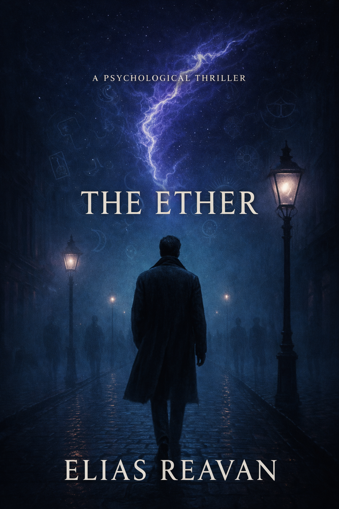

Samenvatting: In *De Ether* volgt journalist Elias Van den Eynde een mysterieus spoor van een verdwenen professor dat hem diep in de verborgen lagen van Londen leidt. Een verhaal vol intriges, psychologische spanning, sci-fi-elementen en subtiele horror, waar energieën, geheimen en verbondenheid elkaar kruisen. Bereid je voor op een reis door het onbekende, waar niets is wat het lijkt en alles met elkaar verbonden is.